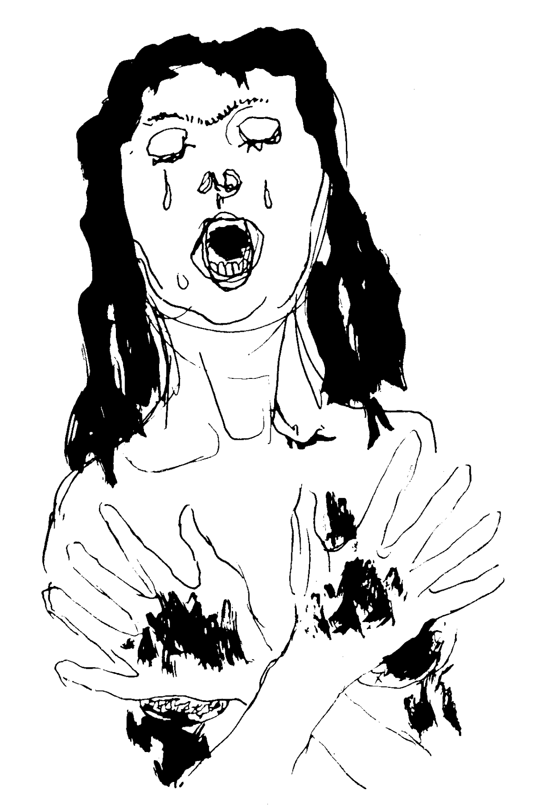

裸身集会 :: 黒い悲しみのロマンセ
（提示来源：rallizes.blogspot）
裸身集会的「黒い悲しみのロマンセ」这首歌歌名来自于洛尔迦（Federico Garcia Lorca）的吉普赛歌集（Romancero gitano，Gypsy Ballads）中的同名歌，英译为「Ballad of Deep Sorrow」，中译为「黑色痛苦谣」。日文、英文、中文译诗：
英译本Gypsy Ballads下载；下图插画来自Robert H. Glauber；

黒い悲しみのロマンセ
雄鶏どものくちばしが
夜明けをもとめて地面を掘る
そのころ暗い山から
ソレダー・モントーヤが下りてくる
真鍮の彼女の肉体は
馬と影のにおいを放つ
すすけた鉄床（かなしき）の胸が
無遠慮な歌をうなる
――ソレダー、つれもなしに、こんな時刻にお前は誰をたずねている？
わたしが誰をたずねているとたずねたところで、
ねえ、それがお前さんに何だというのさ？
わたしは、探したいものを求めて来たのさ、
わたしの喜びと私という人間を。
――おれの悲しみのソレダーよ、
くつわを外された馬は
やがては海を見つけだす。
すると海の波に呑まれてしまうのだ。
――海のことを思い出させないでおくれ、
オリーブの生える土地では
オリーブの葉のさざめきの下で
黒い悲しみが湧き出すのだから。
――ソレダーよ、そなたは何という大きな悲しみを、
抱いているんだろう！
お前の涙はレモンの汁、
のぞみにも、口にもすっぱいレモンの汁。
――何と大きな悲しみだろう！
まるで狂女のように家の中を、
二つのおさげを床にたらして
台所から寝室へわたしはかけまわる。
ひどい悲しみ！ からだも衣服も
わたしはまっ黒になって行く。
悲しや、わたしの木綿の肌着！
悲しや、わたしのひなげしの腿！
――ソレダーよ、ひばりの水で
からだを清め、心も安らかに
待つがよい、ソレダー・モントーヤ。*
はるか下の方で川が歌う
川は空と木の葉のすそ飾り。
新しい光は
南瓜の花の冠を戴く。
おお、ジプシーたちの悲しみよ！
清らかな、いつも孤独の悲しみ。
おお、隠れた河床と
はるかな夜明けの悲しみよ！——ジプシー歌集 / Federico Garcia Lorca著 東京 : 平凡社, 1969 (世界名詩集 ; 26)
Ballad of Deep Sorrow
The picks of the roosters
dig looking for dawn
as down the dark mountain
comes Soledad Montoya.
Yellow copper, her skin
smells of horsed and of dusk.
Smoky anvils are her breasts
moaning round songs.
Soledad, whom are you seeking,
alone and so late?
I’m seeking whom I seek!
What’s it to you?
I come for what I’m looking for.
me and my joy.
Soledad of my sorrows.
horse that takes its head,
you will end up in the sea
where the waves will swallow you.
Don’t speak to me of the sea——
for black pain gushes
through the land of the olives
under the rustle of their leaves.
Soledad, what sorrows!
What awful sorrows!
You weep juice of lemons
sour with waiting and whispers.
Sorrow more than I can bear!
Like a crazy woman
I run through the house.
My two braids sweep the floor
from the kitchen to the bedroom.
Deep in sorrow, turning jet-black
from skin to clothes.
Oh, my shirt of linen!
Ah, my thighs of poppies!
Soledad, wash your body
in the broth of larks,
and leave your heart in peace,
Soledad Montoya.Below the river sings:
ruttle of sky and leaves.
With the flowers of the squash-vine
the new light is crowned.
Oh, sorrow of the gypsies!
Sorrow clean and always lonely
Sorrow of the hidden river
and the far-off dawn.——The Beloit Poetry Journal, Volume 2 - N0.1, Fall 1951, translated by Langston Hughes
黑色痛苦谣
当雄鸡用他们的尖喙
剥啄黑暗的破晓，
索莱达·蒙托娅
走下了蒙蒙亮的山坡，
她带着马和影子的气味，
皮肤是闪亮的黄铜。
她的双乳如同冒热气的铁砧
哼着那些循环的歌。
“索莱达，你想找谁？
这么晚，这样孤独？”
“我想找我要的那一个，
和你又有什么关系？
我来找我要找的，
我的欢乐，我自己的人。”
“索莱达，我的小冤家，
你这匹脱缰的马
迟早会被冲进海里……”
“别跟我说什么海
它的痛苦本来就扎根于
橄榄树的土地，
在这沙沙响的枝叶下。”
“索莱达，你的命真苦！
你承受着怎样的悲伤啊！
你哭出的都是些酸柠檬汁，
看看你那苦涩的嘴！”
“我能不苦吗！整日里
我替人家忙碌，发疯似地
从厨房到卧室
发辫都拖到地板上。
瞧瞧我这衣服和皮肤
我的罂粟花的大腿
都变得像煤球一样！”
“索莱达，用云雀的清水
洗沐你的身子吧，
让你劳苦的心
得以休息，索莱达。”*
河流在下面歌唱：
天空和老树藤的花边。
初生的曙光给自己
戴上了几朵南瓜花。
啊，吉卜赛人的苦痛！
如此清晰，难以诉说。
它来自隐秘的河流
来自遥远的黎明。——死于黎明 / Federico Garcia Lorca著，华东师大出版社，2016，译者王家新